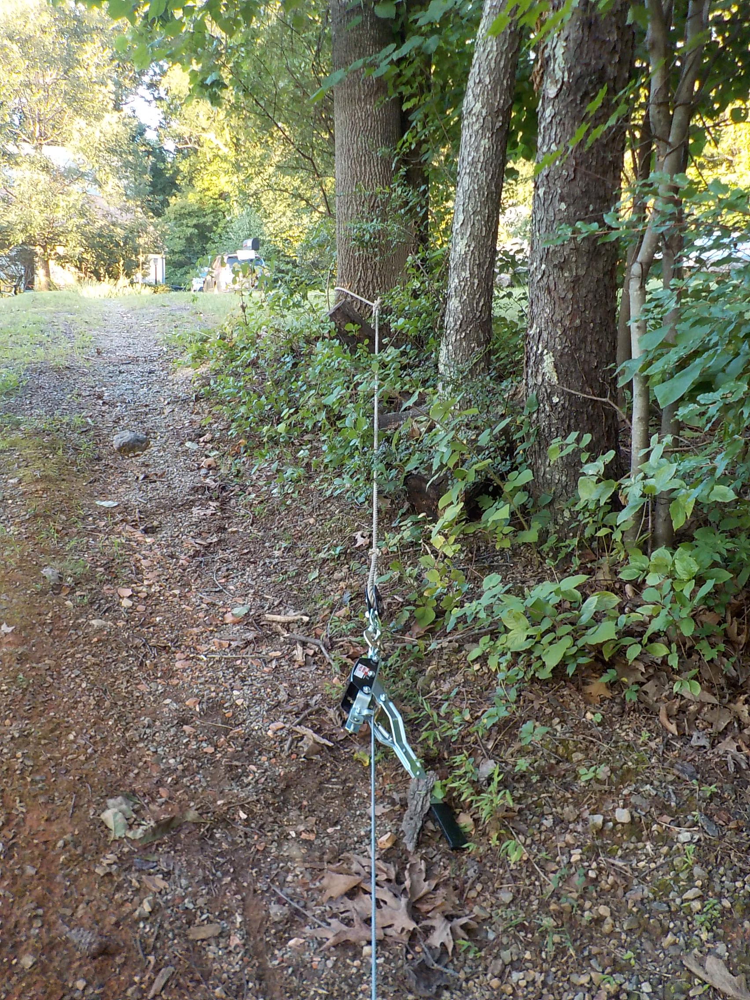

The chainsaw cuts wood that it is under no stress, or that is under traction stress. If the wood is under compression stress, the chainsaw will stop (because of too much friction).
Study the Bending Moment on the cutting piece. The Bending Moment tells which part of the piece is under traction, and which part is under compression. These stresses are added or subtracted to the compression produced by the weight.
With a combination of ropes and steel cables, pull the piece in the direction of the fall, creating an additional bending moment. Cut the wood to create a hinge, that is perpendicular to the direction of the fall. First a > or < on the side under compression stress, then a -- on the side under traction stress. Stop cutting when the hinge is one inch wide. Increase the rope or cable tension and the piece will fall. You will be far away from the falling piece.
The picture shows a winch puller attached to an anchor tree.
.
...
Good luck !!